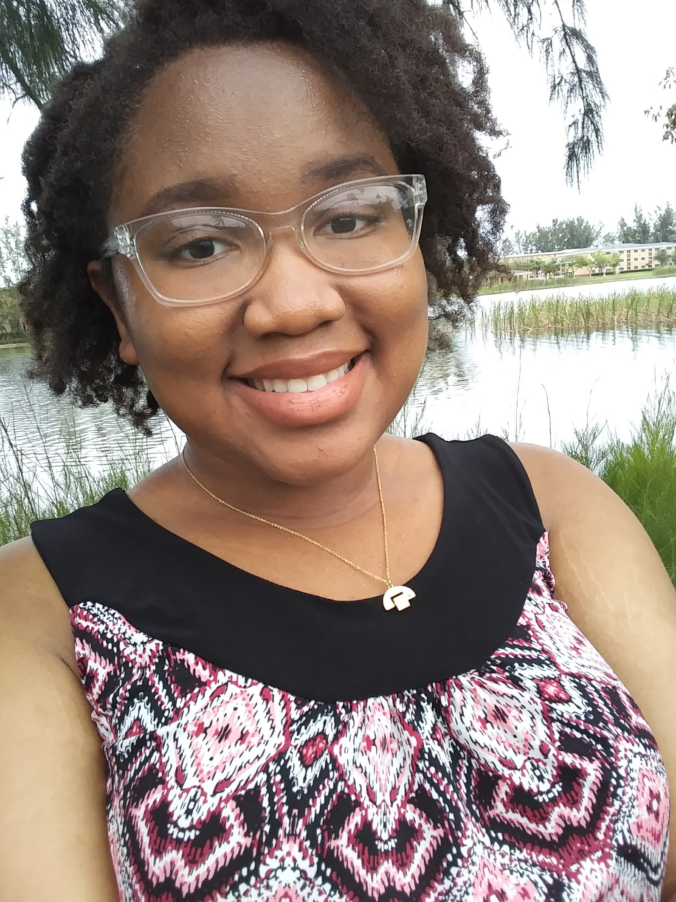

One line that sums my bio (like a quote or a tagline or something)
Rosana Sincere is a Information Technology and Management student at the Illinois Institute of Technology in Chicago, Illinois. Specializing in Cyber Security and Systems, she is meticulous and passionate about what she does, and is always eager to learn.
Born and Raised in Miami, Florida, her love for technology began in highschool. Growing up she was very curious about many things, always wanting to understand how everything worked, creating from scratch, and dissecting random objects for fun. Although, she wasn't really introduced to the expansive world of technology until she took her first digital design course in the tenth grade. Naturally curious and ambitious, she then made it her goal to learn as much about technology as she could, and she later that year attended the 2015 Girls Who Code Summer Immersion program, where she was properly introduced to computer science and programming.
The next year, she participated in a dual-enrollment program with her highschool and with George T. Baker Aviation Technical College, where she studied Avionics Technology for 2 years. In an attempt to experience multiple different areas of technology, she also interned for a summer at the Florida International University through the ASSIST program where she learned about the fabrication method of nanotechnology (specifically for use in medicine) where she was introduced to various recent breathroughs in technology.
After graduating highschool, she moved to Chicago, Illinois to attend college. There she currently resides, as a full time student. She's now looking for new opportunites to continue learning about technology, while she freelances as a web designer and a front-end programmer.